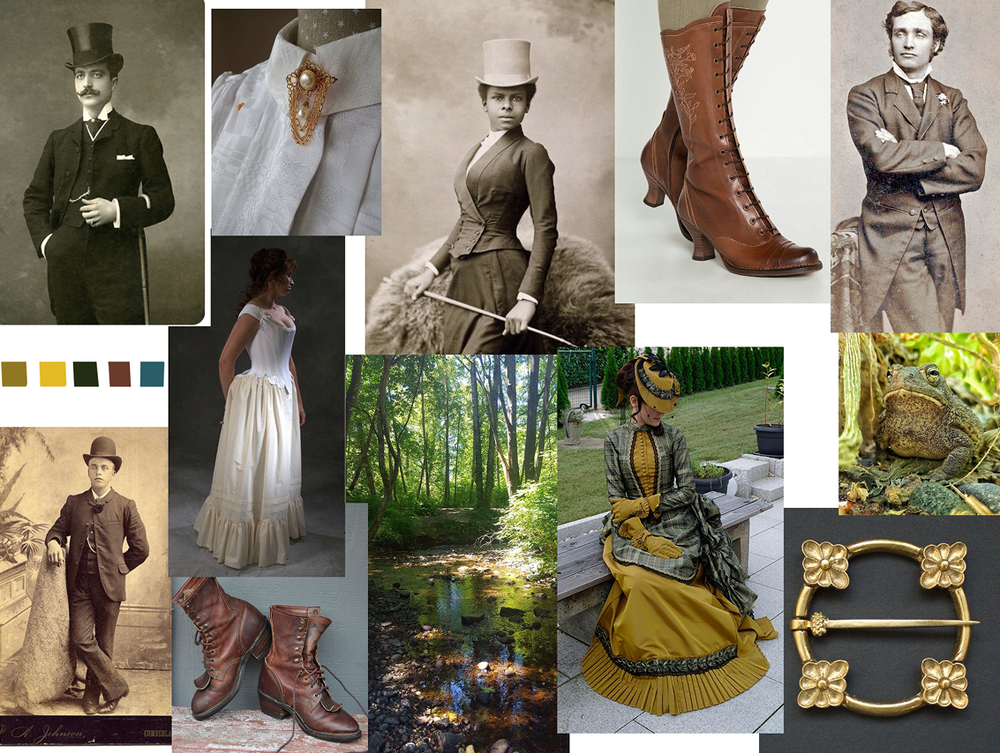
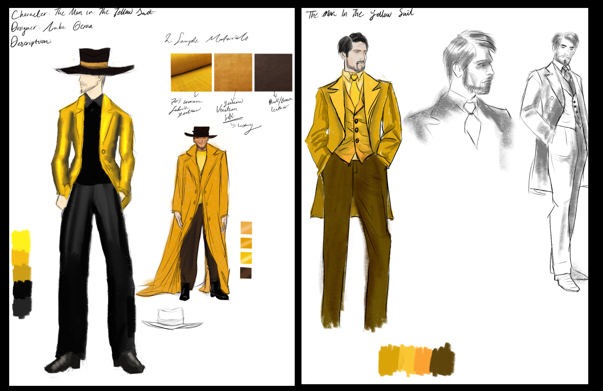
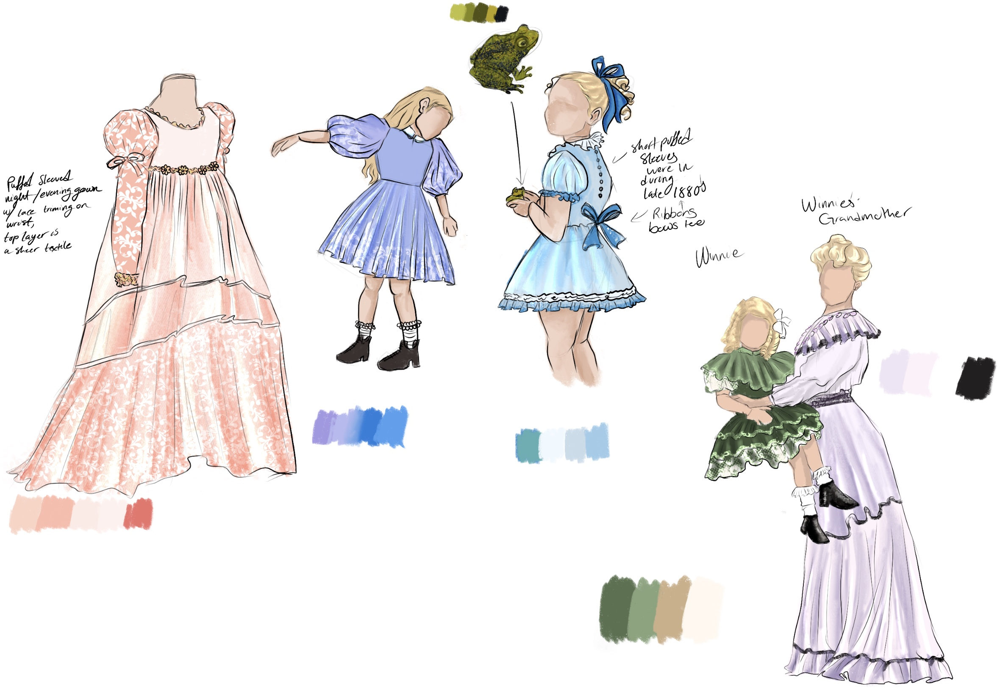
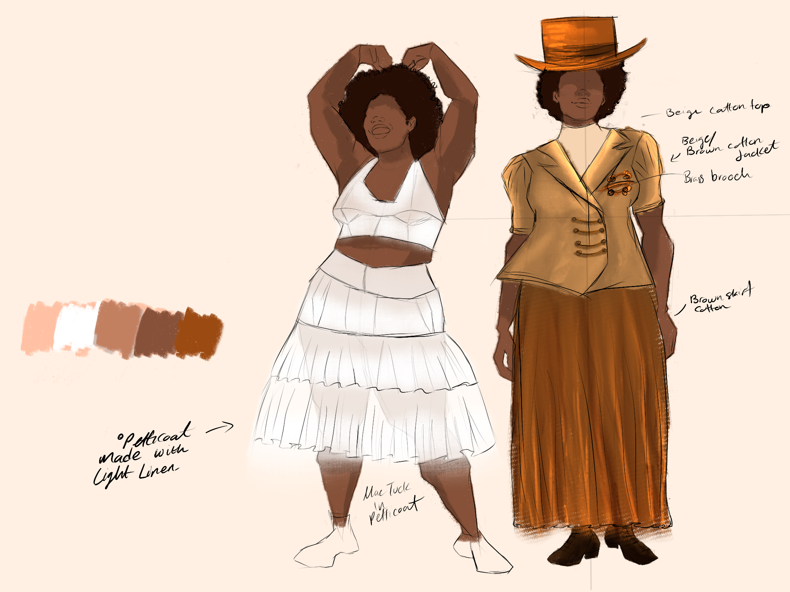
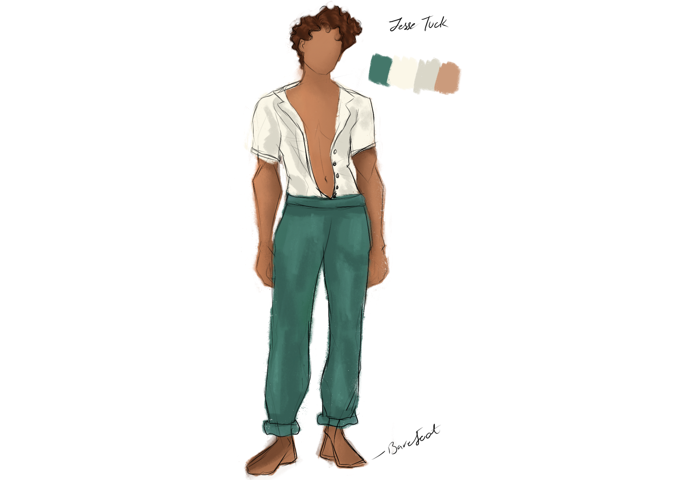

×
Tuck Everlasting - A Play Concept

This project explored costume concepts for Tuck Everlasting (a novel by Natile Babbit),
beginning with research into the setting, period, characters,
silhouettes, textiles, and visual language of the production.
Research
Setting:
1881, in Treegap, a medium-small town surrendered by meadows, forests,
small curvy hills. Takes place during the turn of the 20th century in New York.
(Gilded Age 1865 -1904 between reconstruction era and Progressive era).
Duration: Several days during the first hot week of August
Synopsis:
Tuck Everlasting is a captivating tale centered around a ten-year-old girl
named Winne Foster who yearns to escape her confined, privileged life in pursuit
of adventure. Her life takes a dramatic turn when she stumbles upon a peculiar
toad, a mysterious man in a yellow suit, and a solemn family. Each of these e
ncounters throughout the book serve as the catalyst for a journey of
self-discovery and maturation for young Winnie. Uncovering answers to life's
true challenges between values of youth and aging, love and fear, family/tradition
and self realization.
History of New York in 1880’s:
The average age for 1st time married women were between 20-22, but during this
period women began courting as early as 15 or 16 years old. In regards to popular
fabrics- cotton and silk were popular for gowns but also including wool(sheep) and
linen(flax plant). Most expensive being silk (often woven plain or patterned) and
cotton. There was an increased need and use of sheer textiles to create light looks.
Popular colors at the time was also vivid blues, greens, purples and yellow.
For clothing: delicate, whites, blue, lilac, pink, pale brown or gray- often with
dark trimmings i.e black on pink and white. Dresses of two colors and textile types
were also common. Neat small neat patterns or stripes of contrast were in. so were
full skirts, decorated ribbon bows, fitting short puffed sleeves. Hair often coiled
and looped to back, something like buns covered by a net, hats, bonnets with ribbon
trimmings topped with flowers or ribbons.

Man in the Yellow Suit Analysis:
Age: late 50’s early 60s -no age given
Personality type: manipulative, deceitful, sly, opportunistic, mysterious
Clothing examples: sleazy for 1800s, stand out, oddly put together
Facial Expressions/Makeup: wrinkles

Winnie Foster Analysis:
Winnie (main character) from a wealthy family, as the own their
home cabin and part of the woods that has the magical spring.
Age: 10 years old
Personality type: curious yet restless
Clothing examples: for the late 1800s- clean, tidy, cut, rich
Facial Expressions/Makeup: flushed look, - youthful, but also considering the heat of August Sun.

Mae Tuck Analysis:
Age: late 30’s early 40s -no age given, actual around 130yrs old
Personality type: nurturing, motherly, kind, strong sense of morality
Clothing examples: patchy, layers, warmth
Additional info: Mae Tuck is a gentle wife and a fierce protective mother of two boys.
Described in the book as a great potatoes woman’ alluded to her being bigger than most
women at that time. Aware of her fate with immortality, Mae was determined to live her
life as it came and not complain. Her clothes, while often torn, unsophisticated, yet
intricate, encompassed her down-to-earth nature. The layers and textures of her clothing
suggest a life shaped by simplicity and durability. Mae's unpretentious yet carefully
chosen garments symbolize her connection to the natural world. With this design the reader
glimpses the essence of Mae Tuck as a character rooted in the timeless and practical
aspects of existence. One as a friend to Winnie Foster, and another as wife to Tuck and
a mother to Jesse and Miles.

Jesse Tuck Analysis:
Age: 17 but actually 104 years old
Personality type: playful, adventurous, youthful, free spirited
Clothing examples: free and open minded for the late 1800s,
Facial Expressions/Makeup: curls- described in the book for having wild curls, tan-
as he is more adventurous in the outdoors and free spirited
Sources
- Procreate App - sketching/illustrating
- Figma - presentation
- Book- Tuck Everlasting
- Pinterest/Google - mood board
- University of Washington Libraries. 'Fashion Trends.' Fashion Plate Collection. Accessed Jan 2024. "https://content.lib.washington.edu/costumehistweb/fashion-trends.html#:~:text=%22During%20the%201860%2D85%20period,blue%20on%20pale%20green%2Dgray"
- Hughes, Amy R. "Paint-Color Ideas for Ornate Victorian Houses." This Old House. Accessed Jan 2024. https://www.thisoldhouse.com/painting/21018359/paint-color-ideas-for-ornate-victorian-houses.
by: Araba Bentuma Ocran